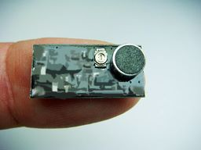
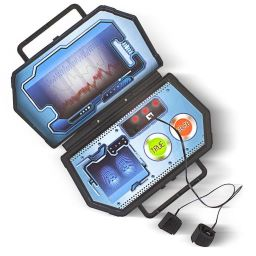

Call for Papers
-

Design Architecture for Nanobugs
The task involves designing an architecture for a new state-of-the-art nano bug that may be used for reconnaissance
-
Behavioural Patterns of Echo Chambers
The task involves coming up with a model to explain the behaviour of members of echo chambers and how they interact with others
-

Truth Detection using AI
The task involves developing an AI model that can infer patterns about human behaviour while lying given visual cues of facial features
Further details about dates and deadlines will be available via email on registration
For any queries, reach out to us